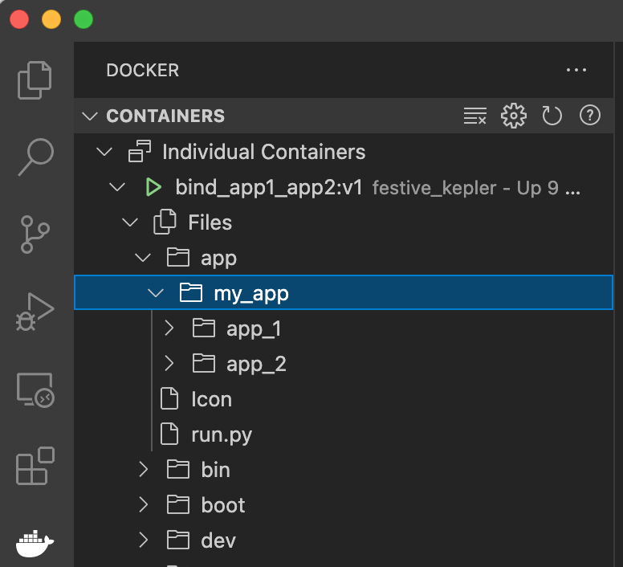
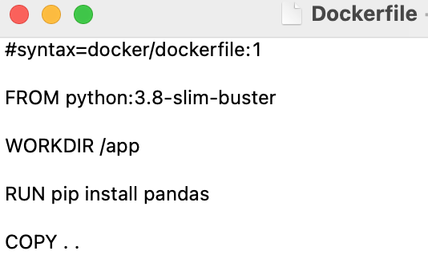
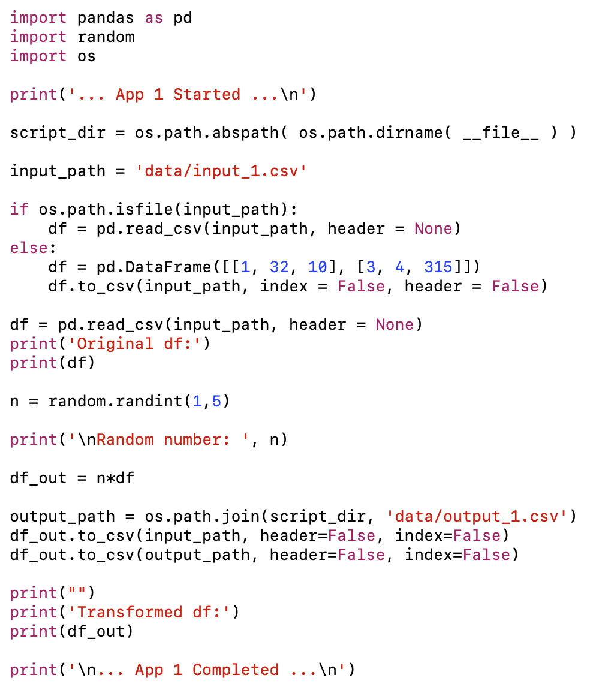
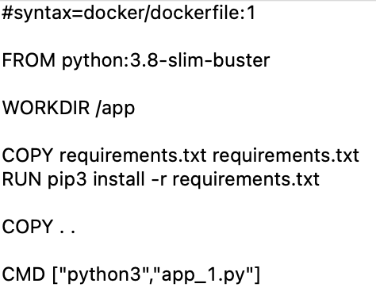
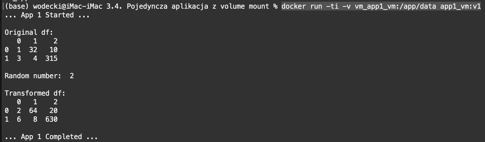
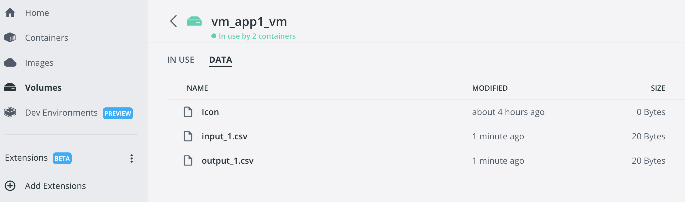

5.5 Kopiowanie plików host-kontener z wykorzystaniem wtyczki Docker w IDE (np. MS Visual Studio Code)
Kopiowanie plików host-kontener z wykorzystaniem linii komend
W praktyce często wygodniejszym rozwiązaniem jest wykorzystanie środowiska IDE do operacji na plikach w aktywnych kontenerach. W szczególności, MS Visual Studio Code udostępnia możliwości inspekcji i zarządzania obrazami, kontenerami i wolumenami (wtyczka Docker).

Scenariusze użycia
Wyżej wymieniony mechanizm możesz w szczególności zastosować w następujących sytuacjach:
Chcę szybko wprowadzić nowego pracownika do projektu
Do naszego zespołu dołącza nowy pracownik. Chcemy szybko przygotować mu maszynę (PC, serwer, notebook).
Zamiast instalować komplet pakietów: uruchamiamy kontener Docker.
Chcę kontynuować pracę nad moim projektem na innym komputerze
Często zmieniam lokalizację: podróżuję, wracam do domu, etc. Chciałbym móc wykonywać obliczenia, trenować modele lub testować aplikację na komputerach, do których mam dostęp. Różnią się one nie tylko systemami operacyjnymi, ale też zainstalowanymi na nich środowiskami oraz konfiguracją sprzętową. W szczególności, część z nich nie może korzystać z akceleratorów takich jak karty graficzne.
Zamiast na każdym z nich instalować dedykowane środowiska, uruchamiam kontener docker z różnymi parametrami (np. z lub bez akceleracji GPU).
Chcę szybko sprawdzić działanie nowej biblioteki uczenia maszynowego
Nie chcę jednak tworzyć dedykowanego środowiska wirtualnego, instalować odpowiednich pakietów, etc.
Pozyskuję oficjalny obraz aplikacji (zawierający odpowiednio skonfigurowane środowisko) i uruchamiam odpowiedni komponent.
Chcę stworzyć nową usługę uczenia maszynowego łącząc ze sobą gotowe komponenty
Wykorzystuję https://hub.docker.com/ do pozyskania odpowiednich obrazów (trochę jak “sklep” z aplikacjami). Łączę je ze sobą w potok korzystając z docker compose.
Chcę zasymulować środowisko produkcyjne
Nasz system analizy obrazu uruchamiany jest na urządzeniu końcowym typu NVidia Jetson Nano. Na swojej stacji roboczej chcę zasymulować, jak zachowa się na tym urządzeniu najnowsza wersja mojego modelu.
W tym celu uruchamiam kontener Docker z obrazem urządzenia końcowego.
Chcę uruchomić mój projekt ML w skalowalnym środowisku, np. Kubernetes, czy u dostawcy usług (GCP, MS Azure czy Amazon EC2)
Dla każdego z komponentów mojego procesu uczenia maszynowego tworzę osobny obraz. Wykorzystuję system Kubeflow do zarządzania pełnym procesem w systemie Kubernetes.
5.5.1 Uruchomienie bez podłączania lokalnego systemu plików
Jeśli chcemy przekazać komuś kontener z kompletem niezbędnych plików (tak, by mógł uruchomić kompletny proces bez konfiguracji zarówno środowiska, jak i posiadania niezbędnych plików), możemy w pliku Dockerfile skopiować komplet plików do odpowiedniego katalogu w obrazie. Odpowiada za to komenda COPY . . :

Aby stworzyć obraz:
- przejdź do folderu, w którym masz komplet niezbędnych danych
- uruchom w nim terminal, a w nim komendę:
docker build -t bind_app1_app2:v2 .
Tak stworzony obraz możesz uruchomić w dowolnym katalogu - nie musisz mieć w nim dostępu do niezbędnych plików:
docker run -ti bind_app1_app2:v2 python3 run.py
Zauważ, że:
- na końcu komendy dodaliśmy
python3 run.py. Jest to związane z tym, że zgodnie z plikiem Dockerfile nasz obraz nie uruchamia skrypturun.py - uruchomienie w folderze, w którym nie ma niezbędnych plików, nie generuje błędów
- kolejne uruchomienia nie dodają żadnych plików do lokalnego systemu.
Scenariusze użycia
Wyżej wymieniony mechanizm możesz w szczególności zastosować w następujących sytuacjach:
Chcę udostępnić innym aplikację wykorzystującą bazę danych
Moja aplikacja wykorzystuje bazę danych (np. Redis, PostgreSQL czy MySQL). Chcę ją udostępnić osobom, które nie mają jej zainstalowanej, nie potrafią też jej skonfigurować czy zarządzać.
Wykorzystuję docker compose do stworzenia aplikacji wielokontenerowej, zawierającej zarówno moją aplikację, jak i odpowiednią bazę danych.
Chcę przeprowadzić szkolenie z zakresu Data Science
Chcę pokazać komuś rozwiązanie w jupyter notebook, wykorzystujące różne biblioteki (np. PyCaret). Użytkownicy nie mają zainstalowanych żadnych środowisk.
Proszę ich o instalację Docker, a potem uruchomienie mojego kontenera.
Archiwizując projekt, chcę zapewnić odtwarzalność mojego rozwiązania w przyszłości
Odpowiednio dokumentuję i publikuję obraz docker mojego rozwiązania w repozytorium obrazów.
Chcę zasymulować środowisko produkcyjne
Nasz system analizy obrazu uruchamiany jest na urządzeniu końcowym typu NVidia Jetson Nano. Na swojej stacji roboczej chcę zasymulować, jak zachowa się na tym urządzeniu najnowsza wersja mojego modelu.
W tym celu uruchamiam kontener Docker z obrazem urządzenia końcowego.
Chcę na urządzeniu końcowym uruchomić wiele serwisów lub sekwencję usług
W tym celu wykorzystuję docker compose do stworzenia uruchomienia kilku usług: równolegle lub w odpowiedniej sekwencji.
Chcę uruchomić mój projekt ML w skalowalnym środowisku, np. Kubernetes, czy u dostawcy usług (GCP, MS Azure czy Amazon EC2)
Dla każdego z komponentów mojego procesu uczenia maszynowego tworzę osobny obraz. Wykorzystuję system Kubeflow do zarządzania pełnym procesem w systemie Kubernetes.
Przydatne źródła
Bardzo dobrą prezentację metod bind mount i volume mount znajdziesz w oficjalnej dokumentacji docker dostępnej tutaj.
5.5.2 Uruchomienie z podłączeniem lokalnego systemu plików
Bardzo często istnieje potrzeba synchronizacji lokalnego systemu plików z kontenerem tak, by można było zmieniać dane źródłowe bez konieczności przebudowy obrazu. Przykładowo, chcemy mieć możliwość modyfikacji plików z danymi, zmiany skryptów python, czy też podglądu pod wyniki uruchomień kontenerów w lokalnym systemie.
Powyższe scenariusze mogą być zrealizowane z wykorzystaniem mechanizm bind mount.
Synchronizacja folderu host’a z kontenerem
Aby stworzyć obraz, w folderze z plikiem Dockerfile uruchom w terminalu komendę:
docker build -t bind_app1_app2:v3 .
Po zbudowaniu obrazu, uruchom odpowiedni kontener podłączając lokalny wolumin:
docker run -ti -v"$(pwd):/app" bind_app1_app2:v3 python3 run.py
Zauważ, że:
- tym razem pliki wygenerowane w ramach kontenera synchronizują się z Twoim folderem lokalnym. W szczególności, w folderach
app_1/inputiapp_1/outputpojawiły się nowe pliki - konieczne jest jednak uruchamianie kontenera w folderze, który zawiera niezbędne pliki. Opcja
-v"$(pwd):/app"usuwa pliki z katalogu\appkontenera - jeśli chcesz uruchomić kontener w miejscu, w którym nie ma odpowiednich plików, uruchom go bez opcji bind mount:
docker run -ti bind_app1_app2:v3 python3 run.py
Modyfikacja pliku w folderze lokalnym
Sprawdźmy teraz, czy ta synchronizacja działa w obie strony. W tym celu zmodyfikuj skrypt run.py dodając do niego wydruk cześć stary...
Jak widać, modyfikacja pliku lokalnego jest uwzględniana przez kontener bez konieczności przebudowania obrazu.
Scenariusze użycia
Wyżej wymieniony mechanizm możesz w szczególności zastosować w następujących sytuacjach:
Chcę kontynuować pracę nad moim projektem na innym komputerze
Często zmieniam lokalizację: podróżuję, wracam do domu, etc. Chciałbym móc wykonywać obliczenia, trenować modele lub testować aplikację na komputerach, do których mam dostęp. Różnią się one nie tylko systemami operacyjnymi, ale też zainstalowanymi na nich środowiskami oraz konfiguracją sprzętową. W szczególności, część z nich nie może korzystać z akceleratorów takich jak karty graficzne.
Zamiast na każdym z nich instalować dedykowane środowiska, uruchamiam kontener docker z różnymi parametrami (np. z lub bez akceleracji GPU).
Chcę zademonstrować innym członkom zespołu aplikację wykorzystującą uczenie maszynowe
…ale tak, by w razie potrzeby mogli sami eksperymentować z odpowiednimi komponentami. (np. zmieniać dane, algorytmy trenowania, aplikację końcową, etc.).
Udostępniam im obraz docker z odpowiednim środowiskiem oraz kompletem kodów źródłowych.
Chcę przeprowadzić szkolenie z zakresu Data Science
Chcę pokazać komuś rozwiązanie w jupyter notebook, wykorzystujące różne biblioteki (np. PyCaret). Użytkownicy nie mają zainstalowanych żadnych środowisk.
Proszę ich o instalację Docker, a potem uruchomienie mojego kontenera.
Chcę przekazywać do kontenera dane specyficzne dla danego hosta (np. jako parametry uruchomieniowy)
Wykorzystuję w tym celu docker bind mount.
Chcę zasymulować środowisko produkcyjne
Nasz system analizy obrazu uruchamiany jest na urządzeniu końcowym typu NVidia Jetson Nano. Na swojej stacji roboczej chcę zasymulować, jak zachowa się na tym urządzeniu najnowsza wersja mojego modelu.
W tym celu uruchamiam kontener Docker z obrazem urządzenia końcowego.
Przydatne źródła
Bardzo dobrą prezentację metod bind mount i volume mount znajdziesz w oficjalnej dokumentacji docker dostępnej tutaj.
5.5.3 Utrzymanie ciągłości pracy pojedyńczej aplikacji z volume mount
Często istnieje potrzeba współdzielenia danych pomiędzy różnymi kontenerami. Można wyróżnić trzy typowe sytuacje, w których może ona zaistnieć:
- Wielokrotnie uruchamiamy ten sam kontener, i chcemy zapewnić ciągłość jego działania. Przykładowo, uruchomienie nr 2 korzysta z rezultatów uruchomienia nr 1 (dane z uruchomienia 1 nie znikają, ale są przekazywane na potrzeby kolejnego)
- Mamy kilka działających równolegle kontenerów i chcemy, by wymieniały one pomiędzy sobą pliki.
- Mamy kilka kontenerów uruchamianych w sekwencji i chcemy, by przekazywały one sobie wyniki operacji.
W poniższym przykładzie pokażemy, jak można zapewnić ciągłość działania pojedynczej aplikacji korzystając z mechanizmu volume mount.
Nasza aplikacja
W naszym przykładzie wykorzystamy aplikację app_1.py realizującą prostą transformację ramki danych:

Zwróć uwagę na eksporty do pliku csv na końcu aplikacji: wynik obliczeń przekazujemy nie tylko do pliku data/output_1.csv, ale też pliku wejściowego data/input_1.csv. W efekcie, kolejne uruchomienia, przy poprawnie działającym mechanizmie zachowania ciągłości danych, powinny korzystać z wyników uruchomień poprzednich.
Stworzenie obrazu
Obraz tworzymy w oparciu o plik Dockerfile: 
Korzystamy w tym celu z komendy:
docker build -t app1_vm:v1 .
Stworzenie współdzielonego woluminu
Funkcjonalność volume mount umożliwia stworzenie lokalnego, ale zarządzanego przez docker’a współdzielonego woluminu. Stwórzmy taki wolumen korzystając z komendy:
docker volume create vm_app1
Możesz teraz sprawdzić, np. korzystając z aplikacji Docker Desktop, że nie zawiera on żadnych danych.
Sekwencyjne uruchamianie kontenerów z wykorzystaniem mechanizmu volume mount
Aby uruchomić kontener z opcją synchronizacja danych z woluminem Docker, w linii komend wpisz:
docker run -ti -v vm_app1_vm:/app/data app1_vm:v1
Efekt to nie tylko uruchomiony skrypt: 
… ale też nowe dane w naszym wolumenie: 
Kolejne uruchomienia kontenerów wykorzystują wyniki poprzednich:

Scenariusze użycia
Wyżej wymieniony mechanizm możesz w szczególności zastosować w następujących sytuacjach:
Chcę zapewnić ciągłość działania mojej aplikacji
… tak, aby kolejne uruchomienia kontenera z moją aplikacją mogły korzystać z wyników poprzednich uruchomień
Wykorzystuję w tym celu docker volume.
Chcę, aby różne równolegle pracujące kontenery wymieniały wymieniały się danymi
Wykorzystuję w tym celu docker volume.
Chcę przechowywać dane wykorzystywane przez moje kontenery u dostawcy usług chmurowych
Wykorzystuję w tym celu docker volume.
5.5.4 Współdzielenie danych pomiędzy kontenerami z volume mount
W tej części naszego wykładu pokażemy, w jaki sposób można zapewnić wymianę danych pomiędzy wieloma kontenerami z wykorzystaniem mechanizmy volume mount.
Stworzenie obrazów i uruchomienie poszczególnych kontenerów
W naszym przykładzie stworzymy i uruchomimy 2 kontenery: app1_shared i app2_shared.
Obie dokunują prostej transformacji danych zaczytanych z pliku zewnętrznego, przy czym app2_shared jako wejście traktuje wynik działania app1_shared:

Aby stworzyć obraz app1, w folderze \app_1 uruchom w terminalu komendę:
docker build -t app1_shared:v1 .
Aby go uruchomić:
docker run -ti app1_shared:v1
Analogicznie, aby stworzyć obraz app2, w folderze \app_2 uruchom w terminalu komendę:
docker build -t app2_shared:v1 .
Aby go uruchomić:
docker run -ti app2_shared:v1
Stworzenie współdzielonego woluminu
Funkcjonalność volume mount umożliwia stworzenie lokalnego, ale zarządzanego przez docker’a współdzielonego woluminu. Stwórzmy taki wolumen korzystając z komendy:
docker volume create vol_app1_app2
Uruchomienie poszczególnych kontenerów z funkcjonalnością wymiany danych
Aby uruchomić poszczególne aplikacje w trybie wymiany danych z wykorzystaniem mechanizmu volume mount:
- W przypadku aplikacji
app1_sharedw linii komend uruchom:
docker run -ti -v vol_app1_app2:/app/data app1_shared:v1
- W przypadku aplikacji
app2_sharedw linii komend uruchom:
docker run -ti -v vol_app1_app2:/app/data app2_shared:v1
Zauważ, że sekwencyjne uruchamianie tych aplikacji powoduje uwzględnianie wyników poprzednich obliczeń jako weściowych do kolejnych:

Scenariusze użycia
Wyżej wymieniony mechanizm możesz w szczególności zastosować w następujących sytuacjach:
Chcę zapewnić ciągłość działania mojej aplikacji
… tak, aby kolejne uruchomienia kontenera z moją aplikacją mogły korzystać z wyników poprzednich uruchomień
Wykorzystuję w tym celu docker volume.
Chcę, aby różne równolegle pracujące kontenery wymieniały wymieniały się danymi
Wykorzystuję w tym celu docker volume.
Chcę przechowywać dane wykorzystywane przez moje kontenery u dostawcy usług chmurowych
Wykorzystuję w tym celu docker volume.